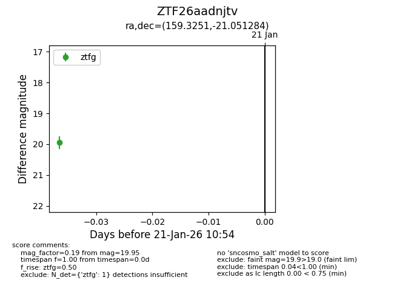
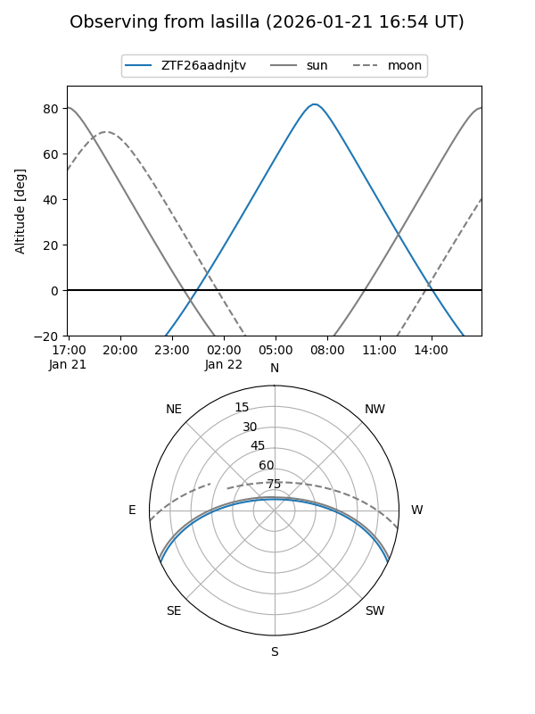
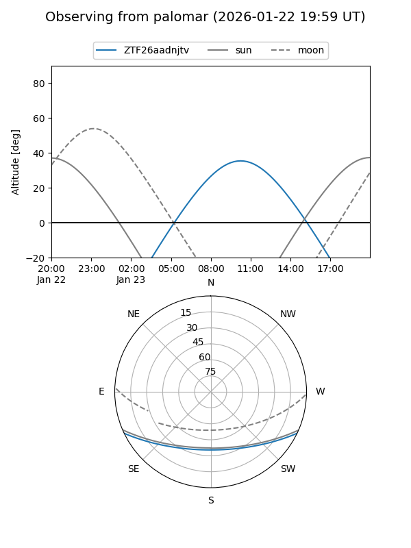

ZTF26aadnjtv
Target ZTF26aadnjtv at 2026-01-21 10:56
Aliases and brokers:
FINK: link
Lasair: link
ALeRCE: link
alt names
ZTF26aadnjtv (ztf,fink_ztf)
Coordinates:
equatorial (ra, dec) = 159.3251,-21.05128
equatorial (HMS+DMS) = 10:37:18.03,-21:03:04.62
galactic (l, b) = (265.5349,+31.90761)
Flags:
Photometry:
last ztfg=19.95
1 ztfg detections
Lightcurve

Visibility


Additional plots